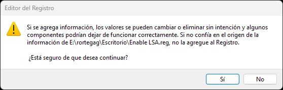

Habilitar la Protección de autoridad de seguridad local (LSA) debido a la última actualización de Windows 11
Si eres usuario de Windows 11 y estás interesado en activar la Protección de Autoridad Local (LSA) en tu equipo, debes saber que no eres el único. Bastante gente, incluido yo, se encuentra en la misma situación. De hecho, algunos de ellos desconocían completamente esta función de seguridad que ahora les está causando problemas.
¿Hay solución? Si, gracias un moderador avalado por Microsoft, ha dejado los siguientes pasos para habilitarlo.
Cómo activar la Protección de autoridad de seguridad local (LSA)
- Abrir Bloc de Notas y copiar el siguiente texto:
- Guardar el archivo, importante que tenga el nombre Enable LSA.reg No se te olvide que tiene que terminar con la extensión .reg
- Abrir el archivo guardado, debería salir un mensaje del Editor de registro de Windows si quieres agregar dicha información. Le das a que sí. 
- Reiniciar el equipo.
Windows Registry Editor Version 5.00
[HKEY_LOCAL_MACHINE\SYSTEM\CurrentControlSet\Control\Lsa]
"RunAsPPL"=dword:00000002
"RunAsPPLBoot"=dword:00000002
Es importante destacar que esta solución es temporal. Su función es resolver el problema de forma provisional hasta que Microsoft publique una actualización posterior.
También, podeís descargar el archvio desde este enlace.